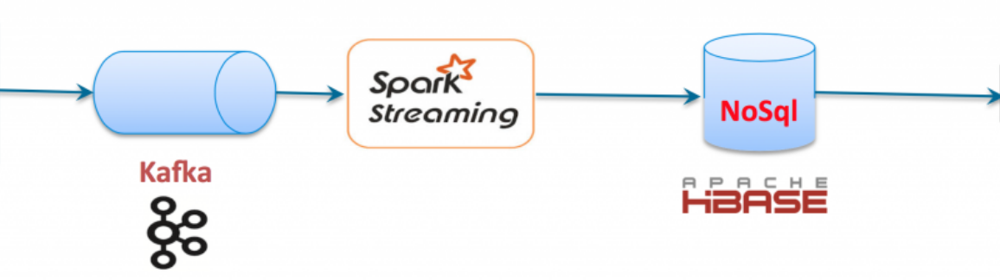
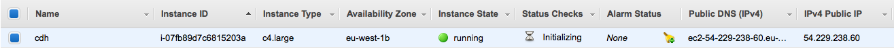
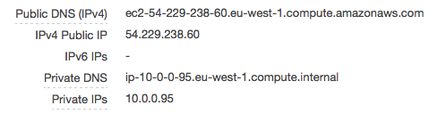
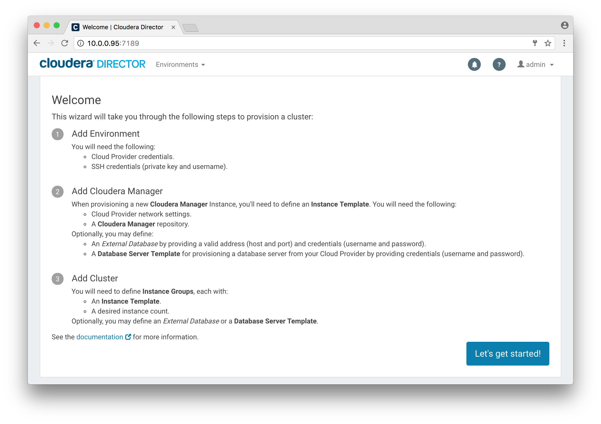
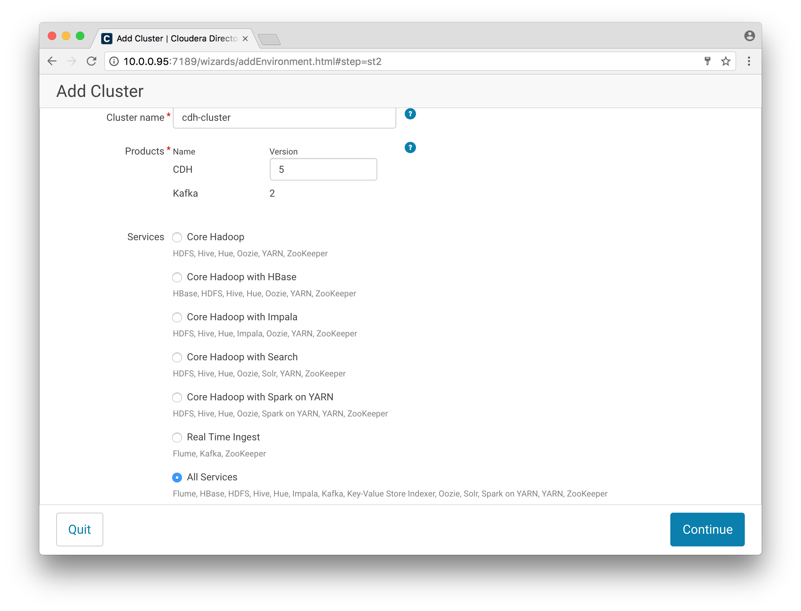
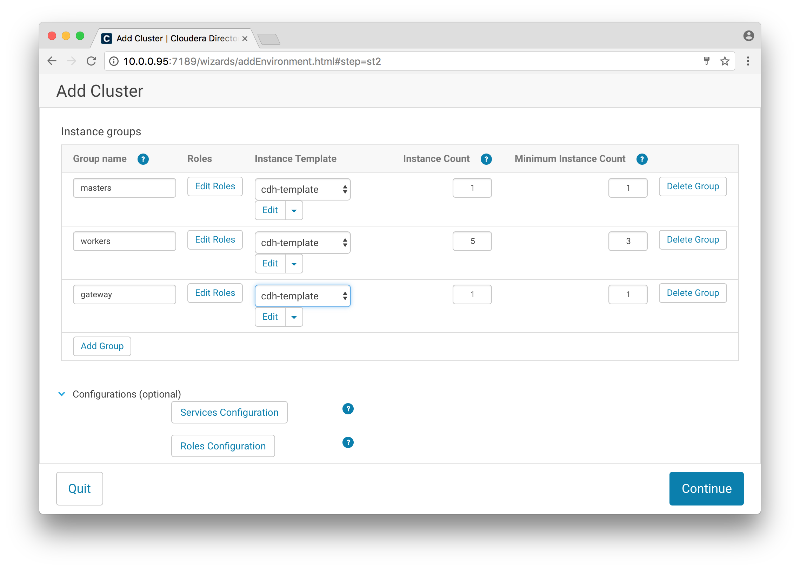
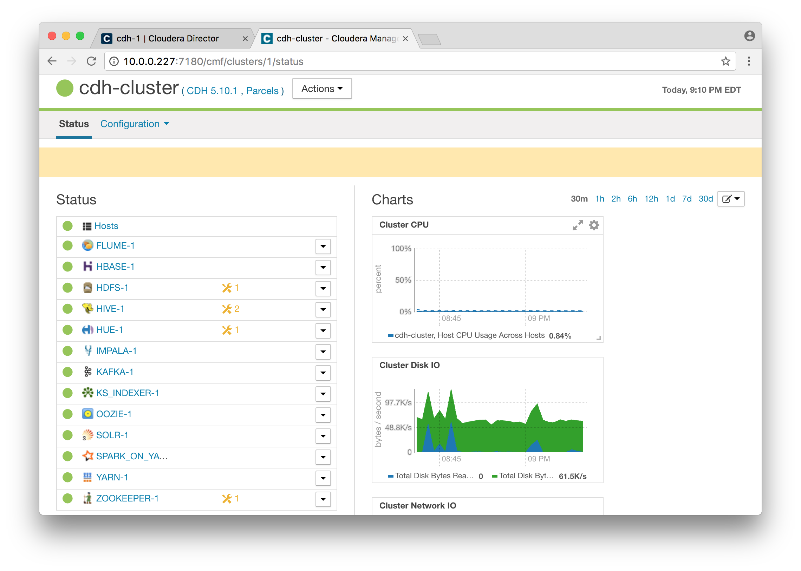
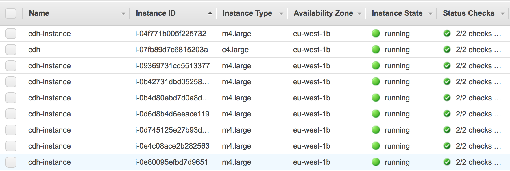
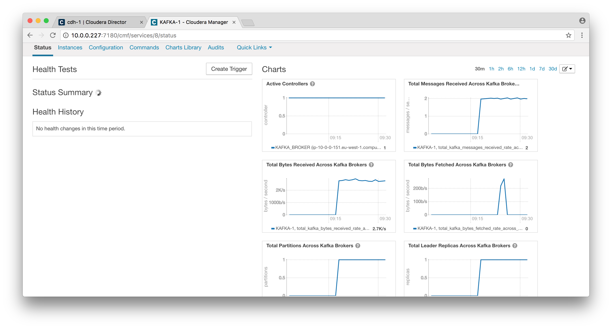

class: center, middle # 2017/04/04 - Bigdata Use Case --- # Problem: Design a Big Data architecture that can be used to process the clickstream data to extract insights for Business Analytics, Text Analytics, Recommendation Engines, Data Services, etc # Proposed Solution: After digging into the current technologies for Bigdata, the solution I chose to try was send the logs clickstrem from multiple web server through [Logstash](https://www.elastic.co/products/logstash) into [Kafka](http://kafka.apache.org/). From there we are going to use [Spark Streaming](http://spark.apache.org/streaming/) to get the data into an [Hadoop Cluster](http://hadoop.apache.org/) managed using the [Cloudera](https://www.cloudera.com/) tools.  [NOTE]: Get a better diagram --- # Devops Tools For the following slides, I'm going to use this tools: - [Invoke](http://www.pyinvoke.org) to create simple commands ([fabric](http://www.fabfile.org/) like) - [Ansible](https://www.ansible.com) for host config/setup automation Everything is on the `fdevops` directory. --- # Launch EC2 for Cloudera Director To build our use case, let's start to Install and Setup the Hadoop Cluster. I'm going to use Cloudera Director on Amazon EC2 following the instructions [here](https://www.cloudera.com/documentation/director/latest/topics/director_deployment_start_launcher.html#concept_jbc_zhk_wr). I chose to use Ubuntu 16.04 because it's the Linux distribution that I most use. ```bash $ invoke prd.ec2_create c4.large cdh PLAY [Create EC2] ************************************************************** TASK [aws-ec2-instance : Create an EC2 instance] ******************************* changed: [localhost -> localhost] PLAY RECAP ********************************************************************* localhost : ok=1 changed=1 unreachable=0 failed=0 ``` And on AWS EC2:  --- # Configure EC2 Get the public IP ```bash $ invoke prd.ec2_refresh_cache $ invoke prd.ec2_list cdh hosts (1): 54.229.238.60 ``` Update the file `inventory/hosts` and run ```bash $ invoke prd.cdh_update cdh [...] TASK [srv-cdh-apt : Setup cloudera director repo key] ************************** TASK [srv-cdh-apt : Setup cloudera director repo] ****************************** TASK [srv-cdh-apt : Apt Update] ************************************************ TASK [srv-cdh-apt : Apt install required packages] ***************************** TASK [srv-cdh-apt : Apt install cloudera] ************************************** TASK [srv-cdh-setup : Restart Cloudera Director Server] ************************ ``` --- # Access to Cloudera Director Cloudera Director is not accessible from the public, so I used the [Step 1: Set Up a SOCKS Proxy Server with SSH](https://www.cloudera.com/documentation/director/latest/topics/director_security_socks.html#concept_ish_wmh_4x) suggested by Cloudera. Open 2 terminals and run the following commands on each of them: ```bash $ invoke prd.cdh_start_proxy ``` ```bash $ invoke prd.cdh_start_chrome ``` At this moment you should have a Chrome browser capable to connect to Cloudera Director, for this you need to go to the EC2 Console, and search for the private IP of the machine.  --- # Cloudera Director  --- # Cloudera Manager Following the documentation on [Deploying Cloudera Manager and CDH on AWS](https://www.cloudera.com/documentation/director/latest/topics/director_get_started_aws_install_cm_cdh.html) 1. We need to create an environment with our AWS credentials 2. Configure an Instance Template 3. Choose a license, in my case the trial license --- # Setup the Cluster 1/4 Time to setup and run the Cluster 1. Configured 'cdh-cluster' as the cluster name 2. Chose to install all services 3. For the instance groups I chose only 5 worker instance 4. Configure the instance templates for the instance groups --- # Setup the Cluster 2/4  --- # Setup the Cluster 3/4  --- # Setup the Cluster 4/4  --- # Cluster is on AWS All instances are up and running  --- # Logstash To start let's create an instance with Logstash installed. After that we can send logs into Logstash and then connect it with Kafka. ```bash $ invoke prd.ec2_create t2.medium logstash_1 PLAY [Create EC2] ************************************************************** TASK [aws-ec2-instance : Create an EC2 instance] ******************************* changed: [localhost -> localhost] PLAY RECAP ********************************************************************* localhost : ok=1 changed=1 unreachable=0 failed=0 ``` Get the public IP ```bash $ invoke prd.ec2_refresh_cache $ invoke prd.ec2_list logstash_0 hosts (1): 54.246.237.120 ``` And then Update the file `inventory/hosts` --- # Setup Logstash - generate logs Before we run the `invoke` command to setup Logstash, let's just take a moment to think about it. We don't have a fully working web server to feed logs to logstash Using a sample log file let's make a python script to generate logs forever ```python def print_file(sleep=5, limit=10): with open('/home/ubuntu/ctlogs-.1438663216674') as fh: count = 0 for line in fh: sys.stdout.write(line) count += 1 if count >= limit: count = 0 time.sleep(sleep) def main(): while True: print_file(5, 10) ``` --- # Setup Logstash - clickstream.conf For the `input` we use the `pipe` plugin to run our python script Because we already have a sample logs already shaped to our needs, we don't need to configure filters, and we just send the log lines directly to kafka. ```json input { pipe { command => "/home/ubuntu/gen_logs.py" } } ``` And then configure the `output` to send to kafka, and for that we need to find the private IP in **Cloudera manager > KAFKA-1 > instances** ```json output { kafka { bootstrap_servers => "10.0.0.151:9092" topic_id => "clickstream" codec => plain { format => "%{message}" } } stdout { } } ``` --- # Setup Logstash - nuisances Logstash output plugin is not compatible with the Kafka version instaled on the Cloudera Cluster. To solve this I needed to downgrade `logstash-output-kafka` plugin to version 4.0.4 --- # Setup Logstash - Invoke command ```bash $ invoke prd.log_update logstash_1 PLAY [Logstash Setup] ********************************************************** TASK [setup] ******************************************************************* TASK [srv-log-apt : Setup logstash repo key] *********************************** TASK [srv-log-apt : Setup logstash repo] *************************************** TASK [srv-log-apt : Apt Update] ************************************************ TASK [srv-log-apt : Apt install required packages] ***************************** TASK [srv-log-apt : Apt install logstash] ************************************** TASK [srv-pyenv : Install pyenv] *********************************************** TASK [srv-pyenv : Set bash_aliases] ******************************************** TASK [srv-pyenv : Set .profile] ************************************************ TASK [srv-pyenv : Install python] ********************************************** TASK [srv-log-setup : Copy ctlogs] ********************************************* TASK [srv-log-setup : Copy gen_logs.py] **************************************** TASK [srv-log-setup : Copy clickstream.conf] *********************************** TASK [srv-log-setup : Stop logstash to remove plugin] ************************** TASK [srv-log-setup : Remove logstash-output-kafka plugin] ********************* TASK [srv-log-setup : Install logstash-output-kafka plugin version 4.0.4] ****** TASK [srv-log-setup : Start logstash] ****************************************** ``` --- # Kafka To check if the logs are being sent to Kafka we can start a consumer in the shell with the command: ```bash kafka-console-consumer --zookeeper 10.0.0.110:2181 --topic clickstream ``` And the logs being fed to logstash should now being showed on the screen. --- # Kafka - Status Cloudera Kafka status page  --- # This is a Work In Progress! Next steps: 1. Configure a schema in HBase 2. Configure Spark Streaming to consume kafka clickstream into HBase 3. Work on the Exploration by Data Scientist and Data Analysts 4. Create real-time use case 5. Think about use cases and to do queries to fetch relevant data from HBase 7. Test the scalability of the architecture, and think about automation and strategies --- # References * https://www.elastic.co/webinars/getting-started-logstash?baymax=rtp&elektra=products&iesrc=ctr * https://kafka.apache.org/documentation/ * https://www.elastic.co/guide/en/logstash/current/plugins-outputs-kafka.html * https://github.com/logstash-plugins/logstash-output-kafka * https://www.elastic.co/guide/en/logstash/current/plugins-inputs-pipe.html * http://eagle.apache.org/docs/cloudera-integration.html * https://github.com/dpkp/kafka-python * http://docs.ansible.com/ansible/intro.html * https://mapr.com/blog/guidelines-hbase-schema-design/